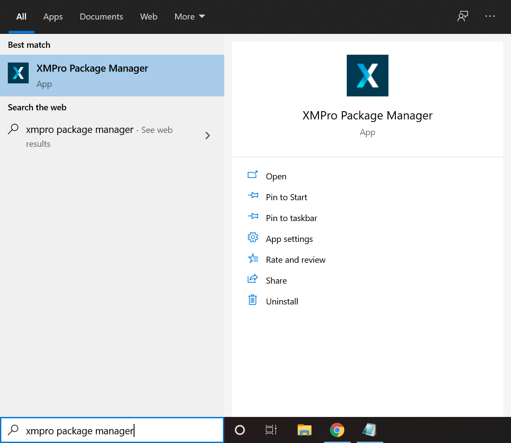
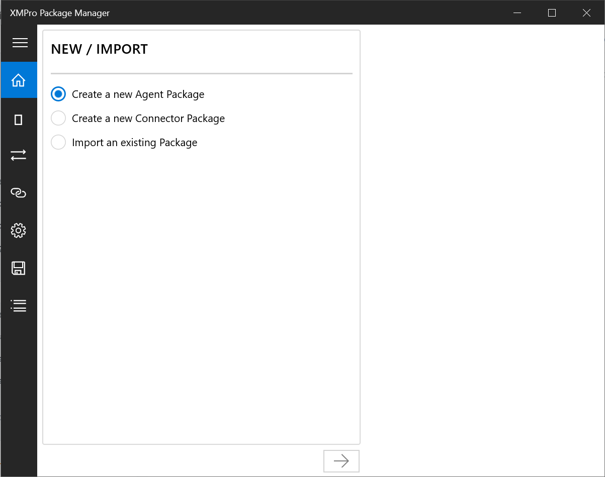
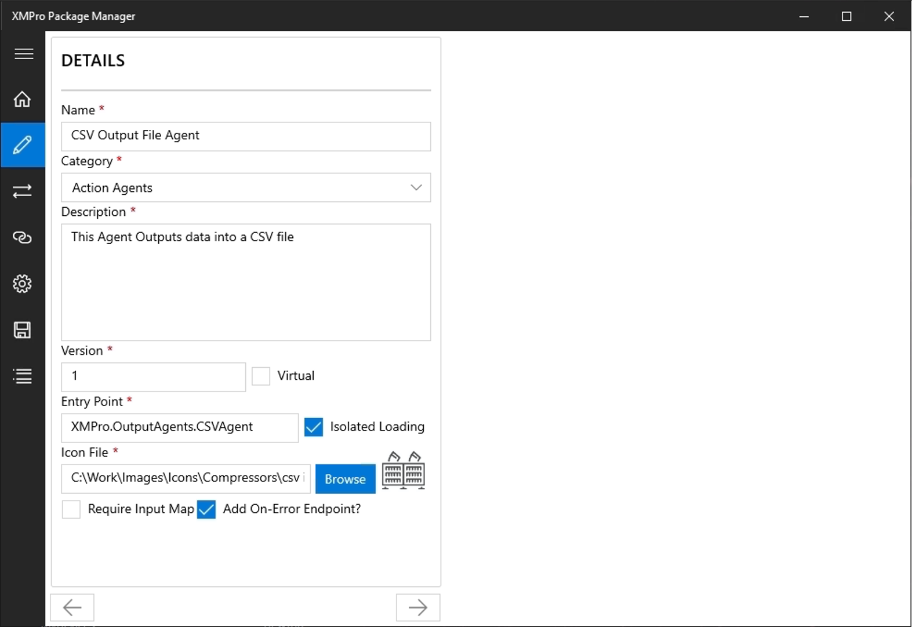
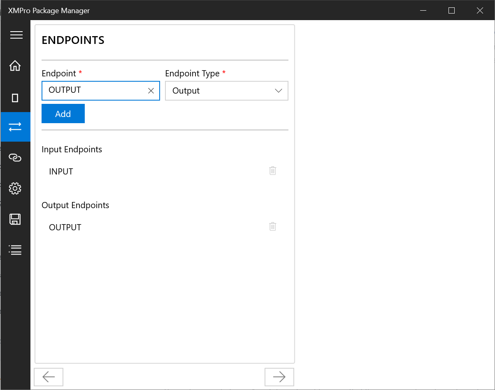
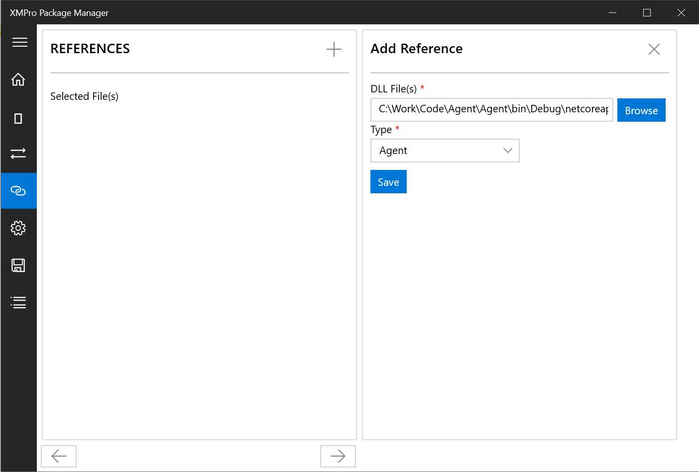
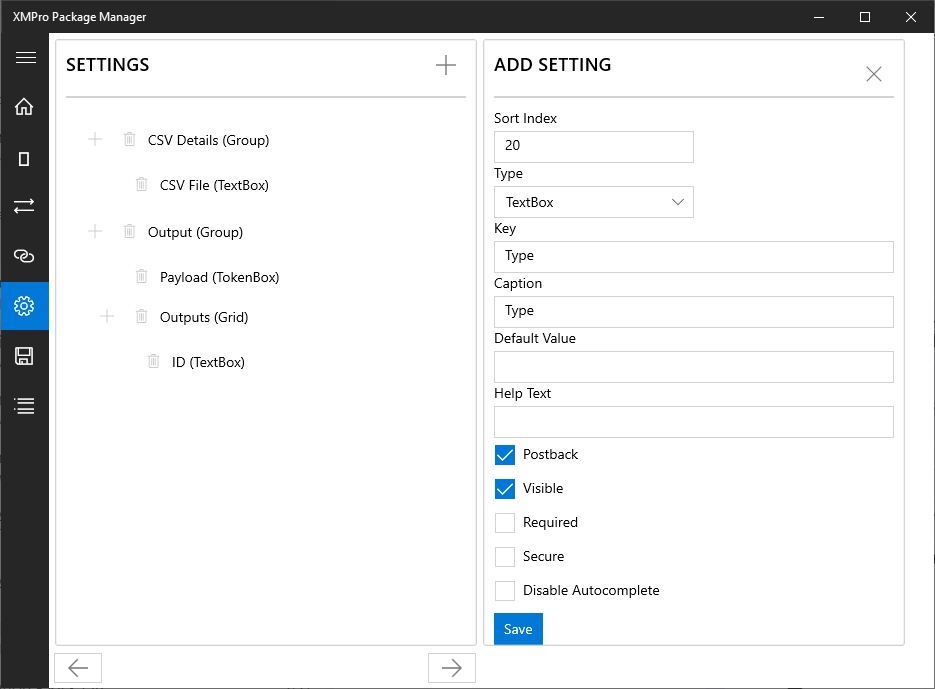
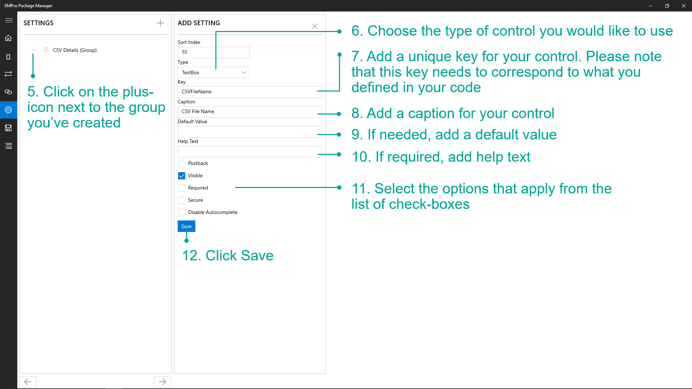
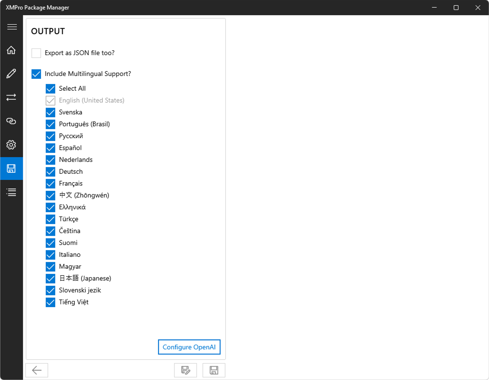
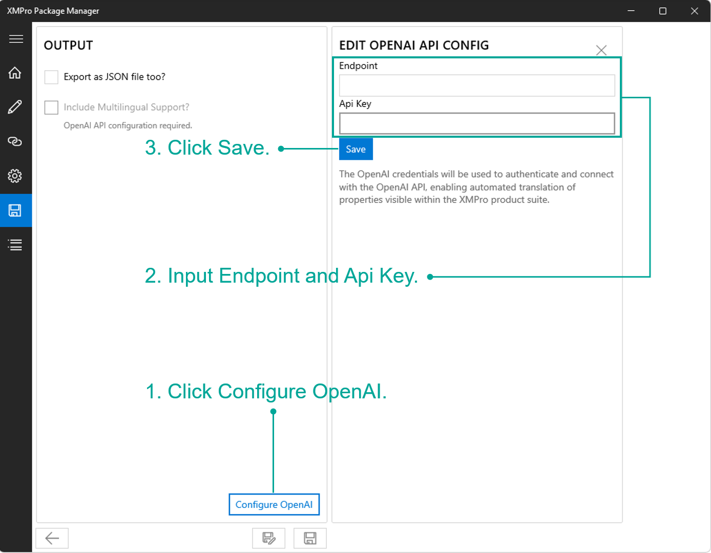

Packaging Agents
Getting Started
The XMPro Package Manager is a Windows 11 desktop application that enables you to package a new Agent or update details for an existing Agent. See the Agent article for more information on Agents.
This application takes you through the process of specifying all the properties your Agent requires, adding or changing the controls for each of the user settings, and uploading the DLL files of the Agent code. It will provide you, upon completion, with a file that can be uploaded to Data Stream Designer after which you can build Data Streams using the Agent.
You can download the software from the Microsoft Windows 10 Store or by clicking here.

After installing the XMPro Package Manager, launch the application from the Microsoft Store or search for "XMPro Package Manager" in the Start menu and then click on "XMPro Package Manager".
Note
You can run multiple instances of Package Manager at the same time. This side-by-side comparison is helpful when developing a new Agent that is similar to another; or comparing different versions of the same Agent.

New / Import
On the first screen of the application, you can either create a new Agent package or import and update an existing one.
Note
Use the arrows at the bottom of the page section to move forward or backward in the application.
When you import an existing package, you have the option to export the package as a JSON file. This is useful either to compare packages or for source control and version management.
You can also import the JSON file from an existing package, which is particularly useful if you need to modify translations added through the Include Multilingual Support feature.

Details
The Details form allows you to configure the properties of an Agent. These properties are listed and explained below.

Name
The name of the Agent is what the Agent will be known as once it is uploaded to the Data Stream Designer platform, for example, "Jupyter Notebook".
Category
The category is selected based on the function the Agent performs, for example, "AI & Machine Learning".
Description
The description is a brief explanation of what the Agent does, for example, "This Action Agent allows you to create and load Jupyter Notebook files".
Version
The version of the Agent. Any real number is acceptable, for example, "1.02".
Caution
If you make a change to an existing Agent, make sure you increment the version number as Data Stream Designer will not allow you to upload two of the same Agents with the same version.
Virtual
Agents can be classified as either Virtual or Non-Virtual.
An Agent is Virtual if it is not specific to a certain environment and can be configured remotely. Non-Virtual Agents have to be in their respective environments to be able to function correctly, e.g. the SQL Server Agent, which has to connect to SQL Server via the intranet.
Entry Point
The entry point is the namespace and class name of the actual Agent's DLL file.
For example, if an Agent with the class name "ActionAgent" is located in the XMPro.JupyterNotebookAgents namespace, the Entry Endpoint for it would be "XMPro.JupyterNotebookAgents.ActionAgent".
Isolated Loading
When loading Agents to use in a Stream Host, all the libraries are put in a separate Load Context. Tick Isolated Loading to keep Agent files separate and reduce the risk of libraries clashing or conflicting together. In most cases, this option should be enabled.
Icon File
The icon used to represent your Agent. Click the Browse button, navigate to where you've stored the file via the Explorer and select the new image file.
Note
It is recommended that you upload either a JPG or PNG file with a size of 64×64 pixels to accommodate for retina displays.
Require Input Map
Tick Require Input Map to specify that your Agent will be receiving events in a defined structure. The arrow leading to your Agent will be configurable to allow the user to map the inputs of your Agent to incoming attributes.
Note
If left unticked, parent outputs will be published to this Agent as they are.
Add On-Error Endpoint?
Tick to add an additional Output Endpoint, called an Error Endpoint.
An Error Endpoint will output error information when your stream is running and something goes wrong, making debugging easier. You can also define actions that will be executed after error data is sent to the next Agent in the stream by your Agent, for example when a certain record is not valid.
Endpoints
The Endpoints form allows you to specify any Input or Output Endpoints.
Input Endpoints
These Endpoints represent entry points to the Agent, which will allow the Agent to receive data or input from another Agent.
To add an Input Endpoint, type it's name in the text field and click Add. The new Endpoint will appear in the list below the Add button. You may need to hover over the list and scroll down to see it. As per the image, an Input Endpoint named "Input" has been added.
Caution
The name of the Input Endpoints has to match what has been defined in the Agent's code.
To remove an existing Endpoint, scroll down in the list until you see it, select the Endpoint and click on the Remove button.
Output Endpoints
Output Endpoints represent exit points from an Agent and allow you to connect your Agent to another Agent, making it possible to pass data from your Agent to another Agent.
To add an Output Endpoint, type it's name in the text field, change the Endpoint Type to "Output", and click Add. The new Endpoint will appear in the list below the Add button. You may need to hover over the list underneath the text field and scroll down before being able to see it. In the image, an Output Endpoint named "Output" has been added.
Caution
The name of the Output Endpoints should match what has been defined in the Agent's code.
To remove an existing Endpoint, scroll down in the list until you see it, select the Endpoint and click on the Delete button.

References
The References form is where you upload the file(s) required for the Agent to execute. Only files in the Selected File(s) list will be included in the package, and any DLLs must be created in .NET.
To upload a file, click the Browse button next to the DLL File(s) field and navigate to where the files are located. Select all the files needed and click the Add button to add them to the Selected File(s) list.
To remove a file from the list, click the Delete button next to the file name in the Selected File(s) list.
| Type | Description |
|---|---|
| Agent | The DLL file that was generated when you built the project containing your Agent source code. |
| Reference | Additional DLL file(s) referenced by the Agent File, such as Newtonsoft.Json. You do not need to upload the XMIoT.Framework.dll file as this DLL is automatically included. |
| Resource | Additional DLL file(s) needed by the Reference File. |
| Zip | The Stream Host decompresses the file, while maintaining the folder structure, so that Agents such as the Meta Agent can run external source code and self package. |

Settings
Depending on what your Agent does, it might require that the user provide certain information, such as a server URL, username, or password. For each of these information fields (or settings), you need to specify which control should be used and what each control represents, for example, the Jupyter Notebook Agent will require the user to add a server URL. The user should provide this value using a text-box control. Thus, you need to create a control with a type of "TextBox" and a caption that reads "Server URL" in the XMPro Package Manager application.
The following controls are available to be used to capture user input:
- Button
- CheckBox
- CheckList
- DropDown
- EditList
- FileUpload
- Filter
- Grid
- Group
- HTML Editor
- NumberBox
- ScriptBox
- TextBox
- Title
- TokenBox
- VariableBox
Each control has several properties that have to be set and not all properties apply to all controls. For example, options apply to a drop-down control and not a text-box control.
The table below contains a list of all the available properties, their description, and to which controls they are applicable.
| Property Name | Control Type | Description |
|---|---|---|
| Allow Custom Text | Drop-Down | Allows the user to type custom text in the drop-down field if checked. |
| Allow Custom Tokens | Token Box | Allows the user to add custom tokens if checked. |
| Caption | All | Text that will be displayed with the group or setting. The caption is usually one or two words, describing the value that should be provided by the user, for example, "Server URL". |
| Default Value | Title | The default value of the title. |
| Font Size | Script Box | Size of the font in the Script Box. |
| Group Type | Groups | Appears as either a sub heading (Default) or a hyperlink (SubPage) on the Agent's configuration page. |
| Help Text | All, excluding Groups | If you need to provide the user with any additional information about the purpose of the setting or helpful instructions, specify it in this field. |
| Key | All | Uniquely identifies the group or setting. |
| Keywords | Script Box | Define your variables or other custom keywords here, so that they will be available in the editor's IntelliSense. |
| Options (Drop Down) | Drop-Down | Use the Options-area to add values to the drop-down menu by specifying the Text and Value fields and then clicking Save. You may also choose an option to be used as the default option by checking the "Set as Default Value" box. |
| Options (HTML Editor) | HTML Editor | Allows you to specify placeholders that can be mapped to input fields in the input received by the Agent. |
| Postback | All | If checked, will cause the form to do a postback to retrieve values from the server when the field loses focus (when the user clicks out of the field). |
| Required | All, excluding Groups | The control will be validated to make sure that a value has been specified if this box is checked. |
| ScriptBox Height | Script Box | Height of Script Box. |
| ScriptBox Mode | Script Box | Language in which script has to be written. |
| ScriptBox Theme | Script Box | The theme of the Script Box. Themes available include: Ambiance, Chaos, Chrome, Clouds, Clouds_midnight, Cobalt, Cromson_editor, Dawn, Dreamweaver |
| ScriptBox Width | Script Box | Width of Script Box. |
| Secure | All | The value of the control will be treated as a secure value if this box is checked (encrypted and not displayed on the form in plain text). An example of a secure value is a SQL Server password. |
| Show Grid Lines | Grid | The grid lines of the grid will be shown if checked. |
| Show Header | Grid | The header of the grid will be displayed, if checked. |
| Sort Index | All | This is used to determine the group or setting's position and works with increments of 10. Adjust this value to move the group or setting up or down on the form. |
| Unique Key | Grid | Mark a specific column as being unique, for example, an identity column. |
| Visible | All | This field sets the initial visibility of the group or setting. |

Adding Settings
Settings are grouped logically into one or more groups, such as authentication, criteria, and output.
Create a group first, then add controls for settings to the group. To do this, follow the steps below:
- Click on the plus-icon (top right, next to the Settings header). A form section will open, allowing you to specify a group for the settings.
- Specify a unique value that can be used as the key for the group.
- Add the caption you would like to use.
- Click Save.
- Next, we are going to add a setting. Click on the plus-icon next to the group you've created.
- Choose the type of control you would like to use.
- Add a unique key for your control. This key must correspond to what you defined in your code.
- Add a caption for your control.
- If needed, add a default value.
- If required, add help text.
- Select the options that apply from the list of check-boxes.
- Click Save.


Output
Export as JSON file
Tick the checkbox Export as JSON file too? if you would like to export the file as JSON too. It will later be saved to the same directory as the XMP file with the file name category_name_version.json.
Include Multilingual Support
Tick the checkbox Include Multilingual Support? if you would like to add support for languages other than English. Uncheck languages you don't want to include.
This feature leverages generative AI to provide language translation. It is available only if the following requirements are met:
- You are connected to the internet.
- Open AI is configured (Click here for instructions on how to do so).
Note
- Only the Agent Description, Properties and Static Helptext are translated. Internal messages and dynamic Helptext added when building the Agent are not included.
- Multilingual support requires XMPro Data Stream Designer and Stream Host v4.4.16+.
- Override the automated translations by editing the JSON file and repackaging it with an incremented version number.

Configure OpenAI
- Click Configure OpenAI.
- A form will open for you to add or modify the OpenAI Endpoint and Api Key.
- Click Save.

Review: Details
Lastly, you can navigate back through the steps to review the details that you've specified. If you are satisfied, complete the wizard by clicking the Save button below before navigating to the folder where you would like the package to be exported. Your package will be created with the file name category_name_version.xmp.
Note
If you imported an existing file, take care to:
- either click 'Save as new Agent' to generate a new Agent, or click 'Save' to generate a new version of the original Agent.
- ensure you select a different location folder or increment the version to avoid overwriting the original.

Further Reading
Note
You need to have the correct permissions set against your user to be able to edit and upload Agents. This is a role not typically given to all users.
Last modified: August 15, 2025